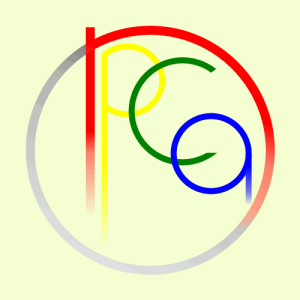

現在位置： ホーム -> 更新履歴 - "npca"の由来 npcaロゴについて 活動形態 所有機種 サーバーマシン
トップページの最上部にも書いてありますが、
npca = Nada Personal Computer Users' Association
= （直訳すると）灘校パソコン使用者の会
という意味です。Users'のUが入らないのは、当時この名前を決めた人が語感を重視したから、という噂があります。
なお、npcaはすべて小文字です。
また、命名当時は部ではなかったのか、Clubという単語が含まれていません。しかし、現在では部としての活動を認められています。昔は学校一の金食い部という噂もありましたが、昨年の予算はkatukkyが申請を忘れたため5000円です。ひどいですね。
今年(2008年度)の予算は125,000円らしいです。(僕もよく知りません)
実はあのnpcaロゴもFaeyが考えたのですが、「どれが"n"？」「最後のは"q"だよね？」などといった質問がかなり多く寄せられましたので、ロゴの解説というのも変ですが、ともかく解説をしておきます。

分かりやすいように色を塗ってみました。このようになっています。確かに、白黒では"n"が見えにくいかもしれません。
因みに、"npca"という文字は、"赤-黄-緑-青"である、という伝統があるらしいです。去年までのnpcaロゴはそれに則っていましたが、今回のデザインは色をつけると変だということでグレースケールにしています。ここでは面影だけでも残そうかとその通りに塗ってありますが、やっぱりけばけばしいですね。
npcaの活動は、普通の部活動とは大きく異なっています。例えば、この部は来る時刻も自由ですし、帰る時刻も自由なのです。極端に言えば、朝校門が開く七時に来て、夜校門がしまる六時ぎりぎりまでいたっていいわけです———もちろん、授業は出なければいけませんが。さらに、入部一年目は部費の徴収がありません。部室の位置は、部室の集まる建物ではなくなぜか旧校舎四階の地学準備室を改装して使っています。
こんな活動形態をとっているときちんとした活動ができないと思われるかもしれませんが、きちんとやろうとする意思があればどのような状況であってもできるものです。
基本的にパソコンをいじるのにそんなにスペースはいりませんから。
部のパソコンは基本的に自作です。現在使用中のものは以下の通り。
| PC/AT互換機(自作) | HAYATE | メインマシン |
| PC/AT互換機(自作) | RIKA | メインマシン |
| PC/AT互換機(自作) | Yuki | メインマシン |
| PC/AT互換機(自作) | Ken | メインマシン |
| PC/AT互換機(自作) | KANA | メインマシン |
| PC/AT互換機(自作) | NPCA-BIG-SERVER | 部内サーバー(メイン) |
| PC/AT互換機(自作) | trlocon | 部内サーバ(予備) |
| ラックサーバ(IBM) | npca-server2 | 部内サーバ(予備) |
NPCA-BIG-SERVERとは現在このウェブサイトを管理しているマシンで他のマシンより少しでかい(ケースが数センチ高い)ので僕が命名した。
あと最後のラックサーバーはパソコン教室から廃棄予定の物を引き取ったため詳細は不明。
せっかくなんで部のサーバーマシンについて書いておきます。
初代(?)サーバーマシン。僕の知ってる限りではこいつが一番古いがちょくちょく補強されていた模様。ただし、恐ろしいほど遅い。一応2.3GhzのCPUを使っているのだが・・・・。現在は予備のサーバーとして稼働中。
パソコンルームでもらってきたSCSIのHDDを積んでいる強者。ただ、恐ろしく使いづらい(遅い)のでこいつは予備＆実験台となっている。
見た目もでかいが中身もでかい。CPUはIntelのCore 2 Quad 2.33Ghzを使用、メモリはDDR2 4GB、HDDは1TBの強者。電源、ケースも割と金をかけ本体はほぼ六万円で購入。OSはUbuntu Desktop(Server + X.org)9.04で、ウェブサーバー、FTPサーバー、SSHサーバー等様々なサービスを展開している。ほとんど部内向けの実験だが・・・・
現在位置： ホーム -> 更新履歴 - サイトの歩みなど [活動理念] 部員作品 - 部員が製作した作品の展示 技術解説 - 使用した技術の紹介 部誌公開 - 文化祭で発行した部誌の展示 内部事情 - 主に管理者の日記 御意見板 - ご意見、ご感想などはこちらへ(現在開設予定なし) 恋文投函 - 部にメールを送信 社会之窓 - 他サイト様へのリンク集 部員専用 - 部員専用のスペースです© Copyright 2006 npca & FeyFay Laboratory. All rights reserved.